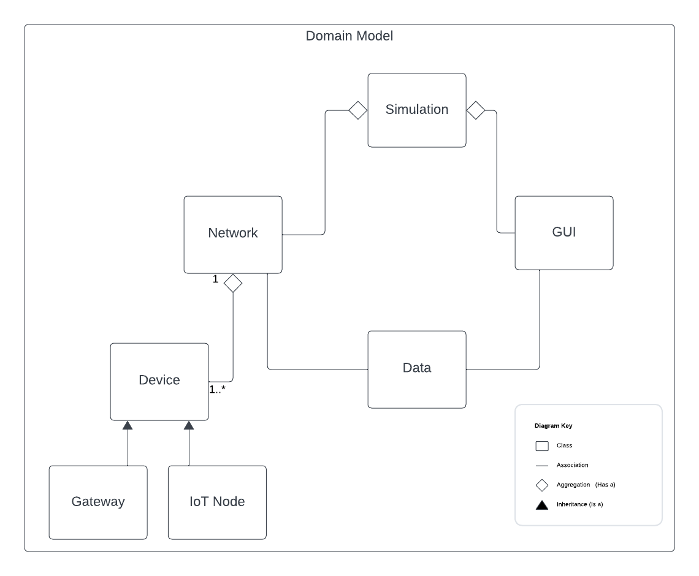
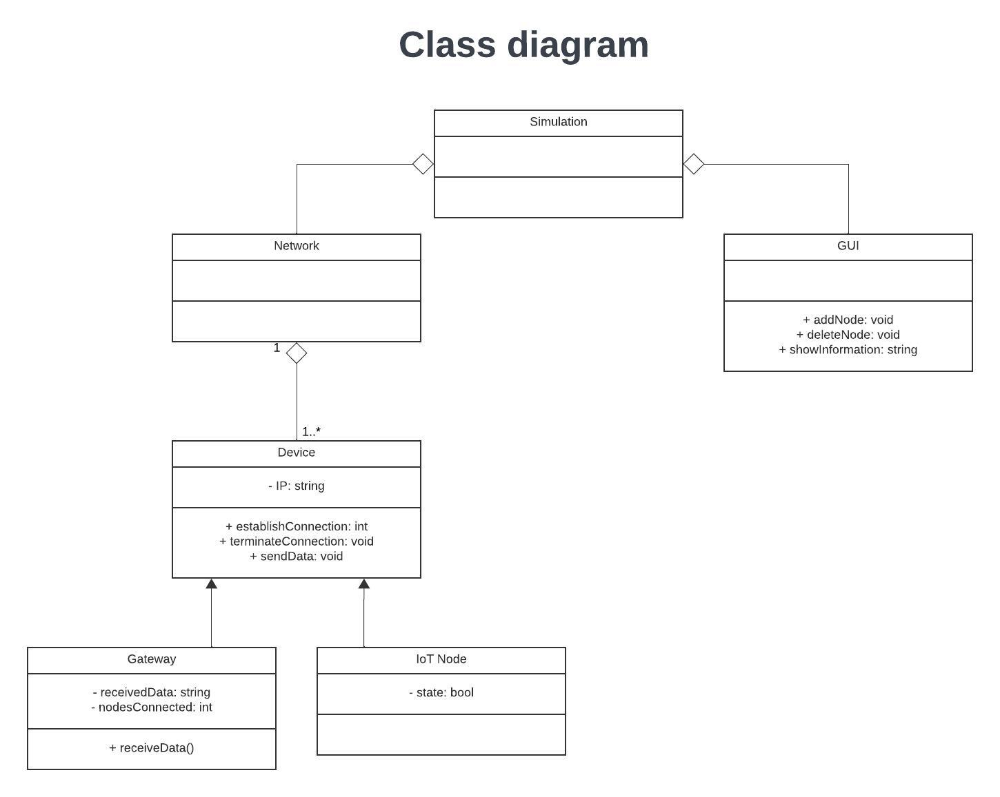
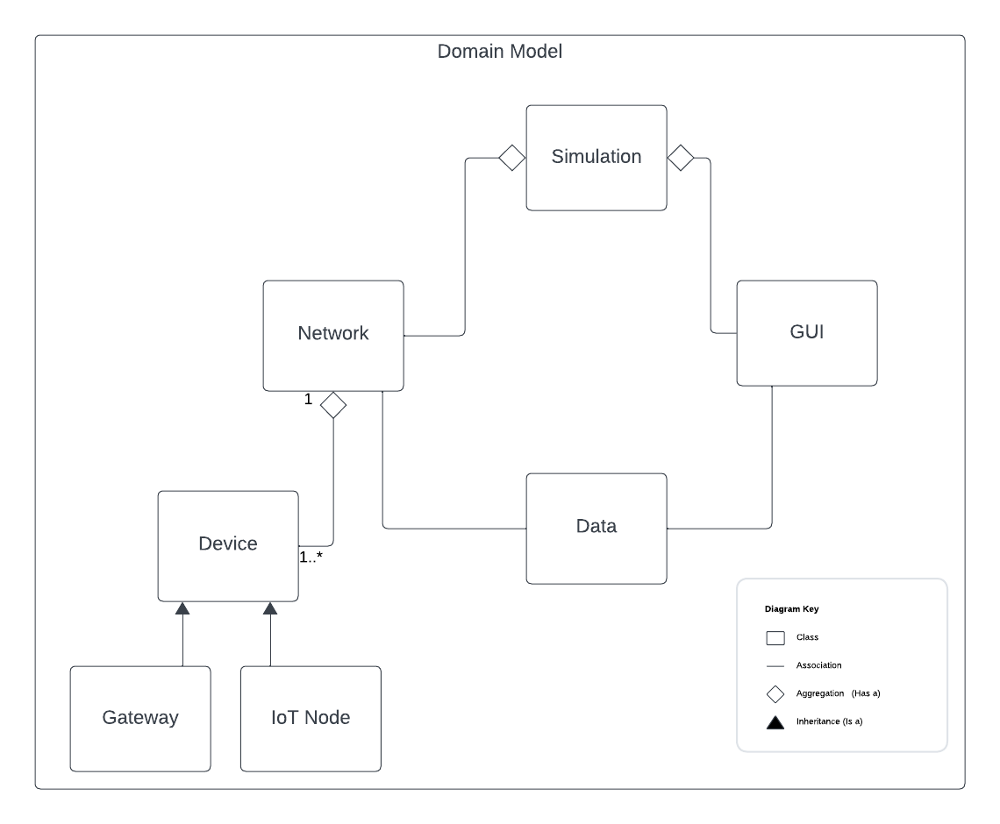
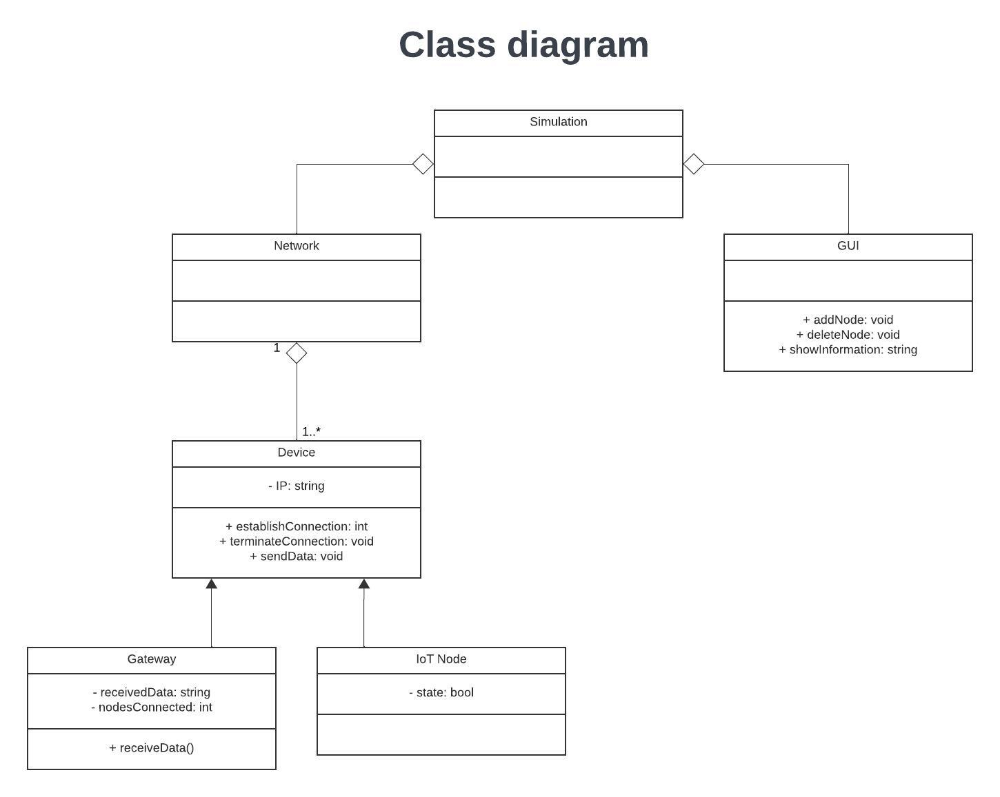

Project 3: Simulator for wireless communication
Use-case
- 1 gateway
- Many nodes that are IoT devices
- Simulation of network communication
- Gui
- Network statistics is captured
An IoT network is simulated in a GUI, where a gateway is placed in the middle, and nodes can be placed around it. The nodes send data through the gateway, which can send it to somewhere on the internet. The GUI can show information relevant to the network health after the simulation is run.
  
 
Objects and their methods
- Network
- GUI
- Add node
- Delete node
- Stop simulation
- Start simulation
- Pause simulation
- Show information
- Gateway
- Receive data
- Forward data
- Nodes
- Send data
Considerations
- Handle collision or just know it happened \(collision avoidance vs. collision detection\)?
- Perhaps implement random access to the channel first, and then if interesting/we have time, implement a protocol.
Analysis
Nodes
- What is a block of data?
- Is the transmission a method or an attribute?